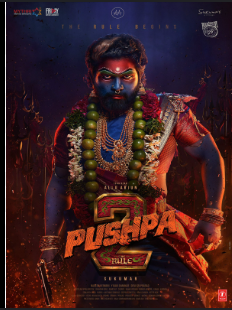

Puspha 2

Rating:
- IMDB: 6.1/10
- Times of India: 3.5/5
Review:
Highlights:
- Hero performances
- Energetic action choreography,dircting a movie
- Sound track bgm
Drawbacks:
- Plot moments feel predictable and formulaic.
- some what the story is predictable.
- Some supporting characters are underwritten.
Cast:
- Lead Actor:Allu Arjun
- Lead Actress1:Rashmika Mandana
- Villian:Sunil
- Villian:Jagapathi babu
Crew:
- Director:Sukumar
- Producer:Naveen Yerneni
- Music: Devi Sri Prasad
- Cinematography:Miroslaw Brozek